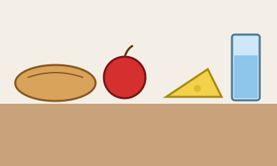
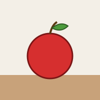

À table !
Mit einem KI-Tutor lernen
Ein KI-Tutor erklärt dir diese Seite und hilft dir bei den Übungen. Wähl deinen Assistenten:
Mit Claude öffnen Mit ChatGPT öffnen Mit Mistral Vibe öffnen
Du nutzt dein eigenes Konto beim Anbieter. Der Assistent ist kein Angebot von lernapps.net: lernapps liefert nur Inhalte und Übungen. Die Wahl gilt für alle Seiten, nur auf diesem Gerät.
Was steht auf dem Tisch?

- A le pain – das Brot
- B la pomme – der Apfel
- C le fromage – der Käse
- D l'eau – das Wasser
Der Tisch mit seinen Wörtern.
Quelle: eigene Zeichnung. Lizenz: CC0-1.0.Jedes Nomen hat im Französischen ein Geschlecht: le steht vor männlichen Nomen, la vor weiblichen, und vor einem Vokal wird beides zu l'. Das Geschlecht ist oft ein anderes als im Deutschen: la pomme, aber der Apfel.
Hier geht es um das Brot auf dem Tisch. Wie du sagst, dass du etwas Brot isst (du pain), steht auf der Lernlandkarte beim Teilungsartikel.
Übung
Schreib zu jedem Buchstaben das französische Wort mit seinem Artikel.
- Teil A der Abbildung
- Teil B der Abbildung
- Teil C der Abbildung
- Teil D der Abbildung
Lösung
- le pain
- la pomme
- le fromage
- l'eau
le, la oder l'?
Übung
Wähle für jede Lücke das passende Wort.
- Das Brot ist gut. → … pain est bon.
- Der Apfel ist rot. → … pomme est rouge.
- Das Wasser ist kalt. → …eau est froide.
Lösung
- Le pain est bon.
- La pomme est rouge.
- L'eau est froide.
Übung
Fülle die Lücken auf Französisch.
- Ich esse den Käse. → Je mange … fromage.
- Ich trinke das Wasser. → Je bois …eau.
Lösung
- Je mange le fromage.
- Je bois l'eau.
Offene Aufgabe
Sieh dir das Bild an. Schreibe in zwei Sätzen, wie das Wort auf Französisch heißt und warum davor la steht und nicht le.

Ein Apfel.
Quelle: eigene Zeichnung. Lizenz: CC0-1.0.Tipp
Schau dir das Wort für den Apfel auf dem Tisch oben an.
Eine gute Antwort enthält:
Lösung
Der Apfel heißt auf Französisch la pomme. Das Nomen ist weiblich, darum steht la davor, obwohl es im Deutschen der Apfel heißt.
Hören, was auf dem Tisch steht
Jetzt hörst du die Sätze, mit einer weiblichen und einer männlichen KI-Stimme. Hör genau auf den Artikel: le, la oder l'. Mit den Tasten unter dem Player stellst du das Tempo ein.
Übung
Hör zu und schreibe den Satz auf Französisch auf.
- KI
- KI
- KI
Lösung
- Le pain est bon.
- La pomme est rouge.
- L'eau est froide.
Übung
Wähle für jede Lücke das passende Wort.
- KI … pain est bon.
- KI … pomme est rouge.
- KI …eau est froide.
Lösung
- Le pain est bon.
- La pomme est rouge.
- L'eau est froide.
Übung
Fülle die Lücken auf Französisch.
- KI Je mange … fromage.
- KI Je bois …eau.
Lösung
- Je mange le fromage.
- Je bois l'eau.
Übung
Hör zu und schreibe auf Deutsch, was der Sprecher sagt.
- KI
- KI
Lösung
- Das Brot ist gut.
- Der Apfel ist rot.
Nachsprechen
Übung
Hör zu, sprich nach und nimm dich auf. Vergleiche dann mit dem Original.
Tipp
Sprich l'eau als ein einziges Wort, ungefähr wie lo.
- Le pain est bon.KI
- La pomme est rouge.KI
- KI
Zum Aufnehmen braucht diese Übung JavaScript. Die Beispiele kannst du auch ohne anhören.
Lösung
- Le pain est bon.
- La pomme est rouge.
- L'eau est froide.